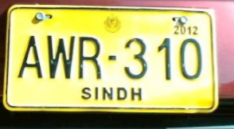
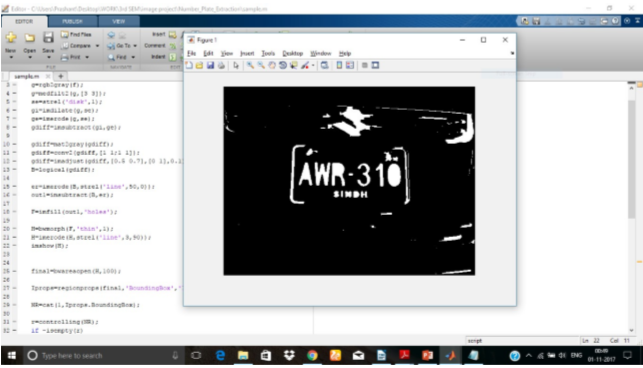
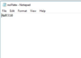

matlab

Number plate extraction is hotspot research area in the field of image processing. Many of automated system have been developed but each has its advantages and disadvantages. It is assumed the vehicle is stationary and images are captured at fixed distance.
An automated system is developed using MATLAB in which image is captured from camera and converted in Gray scale image for pre processing. After conversion, dilation process is applied on image and unwanted holes in image have been filled.
After dilation, horizontal and vertical edge processing of has been done and passed these histograms through low pass filters. Low pass filters filter out unwanted regions or unwanted noise from image. After this filtering, image is segmented and region of interest is extracted and image is converted into binary form. Binary images are easily processed as compared to coloured images
Binarization, each alphanumeric character on number plate is extracted and then recognized with the help of template images of alphanumeric characters. After this, each alphanumeric character is stored in file and whole number plate is extracted successfully.
